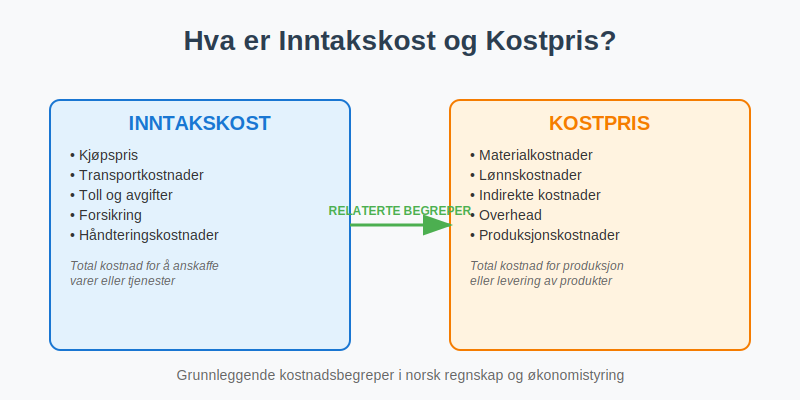
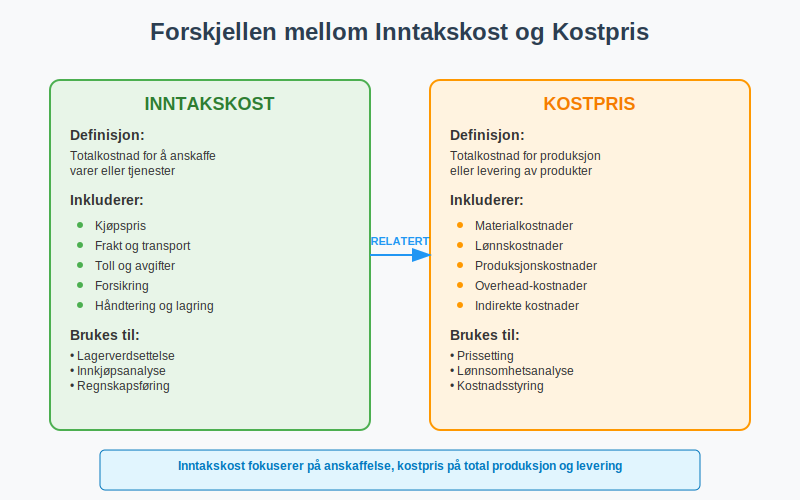
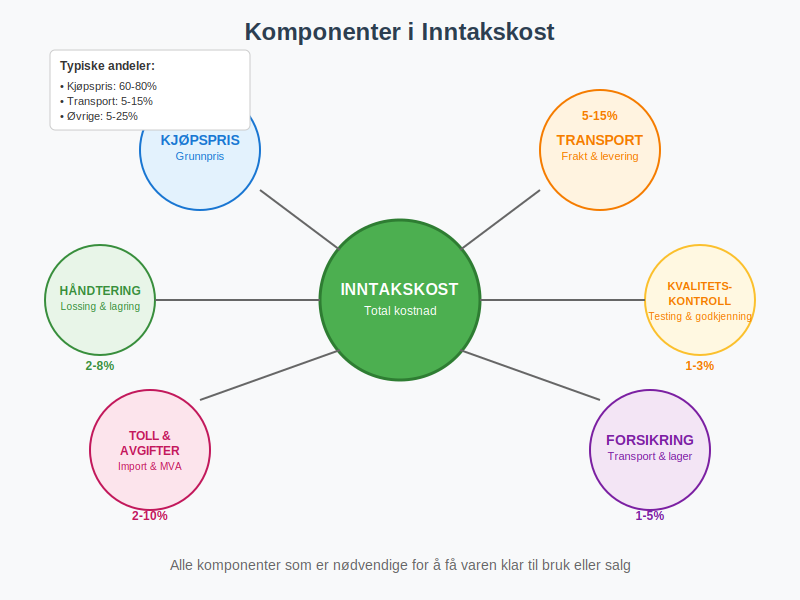
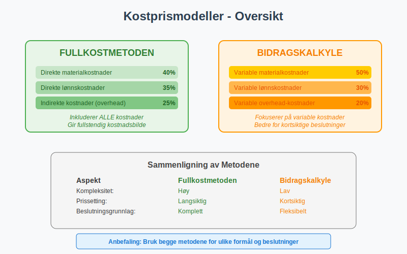
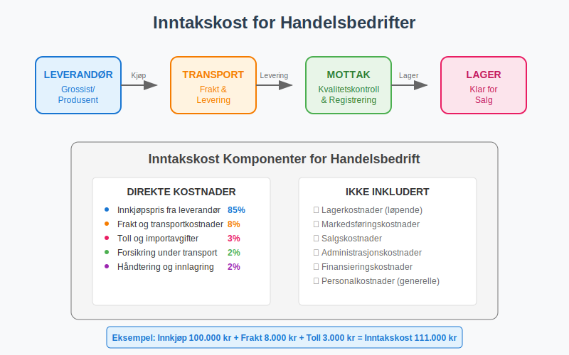
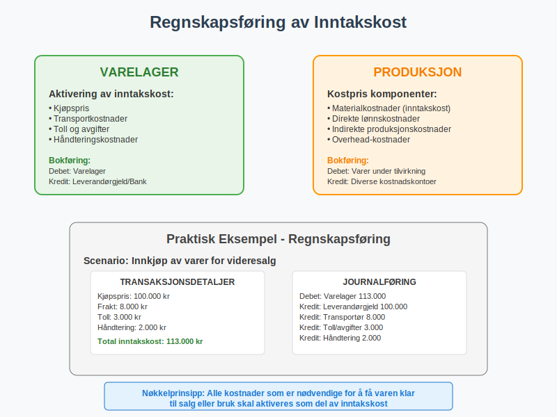
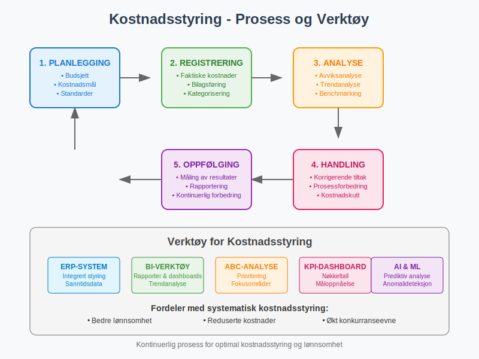
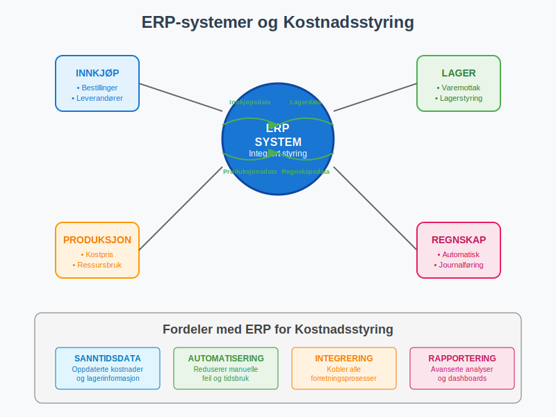

Inntakskost og kostpris er fundamentale begreper i regnskapsføring og økonomistyring som beskriver de totale kostnadene knyttet til anskaffelse, produksjon eller levering av varer og tjenester. Disse begrepene er avgjørende for korrekt regnskapsføring, lønnsomhetsanalyse og prissetting av produkter og tjenester.

Seksjon 1: Definisjon og Grunnleggende Prinsipper
1.1 Hva er Inntakskost?
Inntakskost refererer til den totale kostnaden for å anskaffe varer eller tjenester, inkludert alle direkte og indirekte kostnader som er nødvendige for å få varene eller tjenestene klar for bruk eller salg. Dette begrepet brukes ofte i sammenheng med varelager og innkjøp.
1.2 Hva er Kostpris?
Kostpris er et bredere begrep som omfatter alle kostnader knyttet til produksjon, anskaffelse eller levering av et produkt eller en tjeneste. Kostpris danner grunnlaget for prissetting og lønnsomhetsberegninger.

1.3 Sammenheng med Andre Kostnadsbegreper
Inntakskost og kostpris henger nært sammen med andre viktige kostnadsbegreper:
- Anskaffelseskost: Kostnaden for å anskaffe anleggsmidler
- Driftskostnader: Løpende kostnader for drift av virksomheten
- Produksjonskost: Kostnader direkte knyttet til produksjon av varer
Seksjon 2: Komponenter i Inntakskost
2.1 Direkte Innkjøpskostnader
De grunnleggende komponentene i inntakskost inkluderer:

Hovedkomponenter:
- Kjøpspris: Det faktiske beløpet betalt til leverandør
- Transportkostnader: Frakt og leveringskostnader (dokumentert med fraktbrev)
- Toll og avgifter: Importavgifter og ikke-refunderbar MVA
- Forsikring under transport: Kostnader for å sikre varene under transport
- Håndteringskostnader: Lossing, lasting og lagring
2.2 Indirekte Kostnader
Visse indirekte kostnader kan også inngå i inntakskost:
| Kostnadselement | Inkluderes | Kommentar |
|---|---|---|
| Kvalitetskontroll | ✓ | Nødvendig for å sikre varekvalitet |
| Lagerkostnader (kortsiktig) | ✓ | Direkte knyttet til mottak |
| Administrasjonskostnader | ✗ | Generelle overhead-kostnader |
| Finansieringskostnader | ✗ | Renter på kreditt |
| Markedsføringskostnader | ✗ | Ikke direkte knyttet til anskaffelse |
Seksjon 3: Beregning av Kostpris
3.1 Kostprismodeller
Det finnes flere metoder for å beregne kostpris avhengig av virksomhetens art:

3.1.1 Fullkostmetoden
Fullkostmetoden inkluderer alle kostnader - både direkte og indirekte:
Kostpris = Direkte materialkostnader + Direkte lønnskostnader + Indirekte kostnader
3.1.2 Bidragskalkyle
Bidragskalkyle fokuserer på variable kostnader:
Kostpris = Variable materialkostnader + Variable lønnskostnader + Variable overhead
3.2 Praktisk Eksempel: Produksjonsbedrift
La oss se på et detaljert eksempel for en produksjonsbedrift:
Scenario: Et møbelfirma produserer spisebord.
Kostnadsoppstilling per bord:
| Kostnadselement | Beløp (NOK) | Type |
|---|---|---|
| Direkte materialkostnader: | ||
| Trevirke | 800 | Direkte |
| Beslag og skruer | 150 | Direkte |
| Lim og finish | 100 | Direkte |
| Direkte lønnskostnader: | ||
| Snekkerarbeid (8 timer × 400 kr) | 3 200 | Direkte |
| Indirekte kostnader: | ||
| Maskinleie (allokert) | 200 | Indirekte |
| Strøm og oppvarming | 100 | Indirekte |
| Kvalitetskontroll | 50 | Indirekte |
| Total kostpris | 4 600 |
Seksjon 4: Inntakskost for Ulike Bransjer
4.1 Handelsbedrifter
For handelsbedrifter er inntakskost særlig viktig for varelager:

Typiske komponenter:
- Innkjøpspris: Pris fra grossist eller produsent
- Transportkostnader: Frakt til lager
- Tollkostnader: Ved import av varer
- Lagerkostnader: Mottak og innlagring
- Forsikring: Dekning under transport og lagring
4.2 Produksjonsbedrifter
For produksjonsbedrifter er kostpris mer kompleks:
Materialkostnader:
- Råmaterialer: Hovedingredienser i produktet
- Hjelpematerialer: Emballasje, etiketter, etc.
- Innkjøpskostnader: Transport og håndtering av materialer
Lønnskostnader:
- Direkte lønn: Arbeidere som jobber direkte med produktet
- Indirekte lønn: Formenn, kvalitetskontrollører
- Sosiale kostnader: Arbeidsgiveravgift, feriepenger
4.3 Tjenestebedrifter
For tjenestebedrifter fokuserer kostpris på:
- Lønnskostnader: Hovedkomponenten i de fleste tjenester
- Reisekostnader: Transport til kunde
- Materialkostnader: Forbruksmateriell og utstyr
- Overhead: Kontorlokaler, IT-systemer
Seksjon 5: Regnskapsføring og Praktisk Anvendelse
5.1 Regnskapsføring av Inntakskost
Korrekt regnskapsføring av inntakskost følger bokføringsloven og god regnskapsskikk:

Hovedprinsipper:
- Sammenstilling: Alle kostnader som hører sammen skal sammenstilles
- Forsiktighet: Usikre kostnader skal vurderes konservativt
- Vesentlighet: Små beløp kan behandles forenklet
5.2 Påvirkning på Nøkkeltall
Korrekt beregning av inntakskost og kostpris påvirker viktige nøkkeltall:
| Nøkkeltall | Påvirkning | Betydning |
|---|---|---|
| Bruttofortjeneste | Direkte | Høyere kostpris = lavere bruttofortjeneste |
| Lagerverdi | Direkte | Inntakskost bestemmer lagerverdi |
| Dekningsbidrag | Indirekte | Påvirker variable kostnader |
| Prissetting | Strategisk | Grunnlag for salgspris |
5.3 Utfordringer og Fallgruver
Vanlige feil ved beregning av inntakskost:
- Glemte kostnader: Ikke alle relevante kostnader inkluderes
- Feil allokering: Indirekte kostnader fordeles feil
- Timing: Kostnader regnskapsføres på feil tidspunkt
- Valutasvingninger: Ikke hensyntatt ved import
Seksjon 6: Strategisk Betydning og Analyse
6.1 Kostnadsstyring
Effektiv styring av inntakskost og kostpris er avgjørende for lønnsomhet:

Styringsverktøy:
- Budsjettsammenligning: Faktisk vs. budsjettert kostpris
- Trendanalyse: Utvikling over tid
- Benchmarking: Sammenligning med konkurrenter
- ABC-analyse: Fokus på de viktigste kostnadsdriverne
6.2 Prissettingsstrategi
Kostpris danner grunnlaget for strategisk prissetting:
Prissettingsmodeller:
- Cost-plus: Kostpris + ønsket margin
- Markedsbasert: Basert på konkurrentpriser
- Verdibasert: Basert på kundens opplevde verdi
6.3 Lønnsomhetsanalyse
Korrekt kostpris er essensielt for lønnsomhetsanalyse:
| Analyseområde | Anvendelse | Nytte |
|---|---|---|
| Produktlønnsomhet | Sammenligne produkter | Fokusere på lønnsomme produkter |
| Kundelønnsomhet | Analysere kundesegmenter | Optimalisere kundeportefølje |
| Kanallønnsomhet | Vurdere salgskanaler | Prioritere effektive kanaler |
Seksjon 7: Digitalisering og Moderne Verktøy
7.1 ERP-systemer og Kostnadsstyring
Moderne ERP-systemer har revolusjonert kostnadsstyring:

Fordeler med digitale løsninger:
- Automatisering: Reduserer manuelle feil
- Sanntidsdata: Oppdatert kostnadsinformasjon
- Integrering: Kobler sammen alle forretningsprosesser
- Rapportering: Avanserte analysemuligheter
7.2 Kunstig Intelligens og Kostprisprognoser
AI og maskinlæring brukes stadig mer for:
- Kostnadsprognoser: Prediktive modeller for fremtidige kostnader
- Anomalideteksjon: Identifisere uvanlige kostnadsmønstre
- Optimalisering: Foreslå kostnadsbesparelser
- Automatisk kategorisering: Klassifisere kostnader automatisk
Seksjon 8: Juridiske og Regulatoriske Aspekter
8.1 Skattemessige Konsekvenser
Kostprisberegning har direkte skattemessige konsekvenser:
Viktige prinsipper:
- Fradragsrett: Kun faktiske kostnader kan trekkes fra
- Dokumentasjon: Alle kostnader må dokumenteres med bilag
- Timing: Kostnader må periodiseres korrekt
- Armslengdeprinsippet: Ved transaksjoner mellom nærstående parter
8.2 Revisjonsaspekter
Revisorer fokuserer særlig på:
- Fullstendighet: Er alle kostnader inkludert?
- Nøyaktighet: Er kostnadene korrekt beregnet?
- Klassifisering: Er kostnadene riktig kategorisert?
- Verdsettelse: Er lager verdsatt til riktig kostpris?
Konklusjon
Inntakskost og kostpris er fundamentale begreper som påvirker alle aspekter av bedriftens økonomi - fra daglig drift til strategiske beslutninger. Korrekt forståelse og beregning av disse kostnadene er avgjørende for:
- Lønnsomhetsanalyse: Forstå hvilke produkter og tjenester som skaper verdi
- Prissetting: Sette konkurransedyktige priser som sikrer lønnsomhet
- Kostnadsstyring: Identifisere og redusere unødvendige kostnader
- Regnskapsføring: Overholde juridiske krav og god regnskapsskikk
Ved å implementere systematiske prosesser for kostnadsstyring og utnytte moderne teknologi, kan bedrifter oppnå bedre kontroll over sine kostnader og forbedre sin konkurranseevne i markedet.
For ytterligere informasjon om relaterte emner, se våre artikler om anskaffelseskost, driftskostnader og avskrivning.